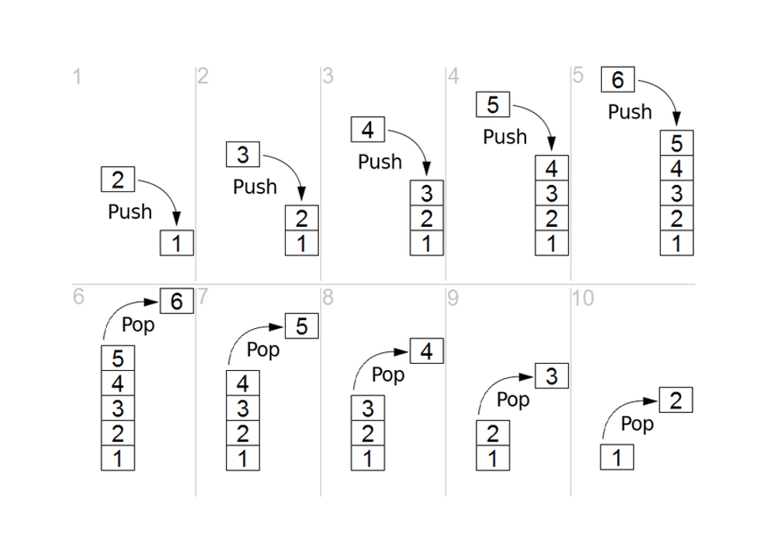

Stack
Tumpukan (stack): kumpulan barang yang terurut di mana penambahan barang baru dan penghapusan barang yang sudah ada selalu terjadi di ujung yang sama. Ujung ini biasanya disebut sebagai "atas." Ujung yang berlawanan dengan atas dikenal sebagai "dasar." Prinsip pengurutan ini terkadang disebut LIFO/FILO.

Operasi pada stack
- stack (), inisialisasi stack yang kosong
- push(data), penambahan data baru pada posisi top dari stack
- pop(), penghapusan data yang terdapat di posisi top dari stack. Return value dari fungsi ini adalah data yang dihapus dari stack tersebut
- peek(), informasi data yang terletak pada posisi top
- isEmpty(), untuk memeriksa apakah stack dalam keadaan kosong
- size(), informasi jumlah data yang terdapat pada stack
Contoh Code
stack = []
# append() function to push element in the stack
stack.append('a')
stack.append('b')
stack.append('c')
print('Initial stack')
print(stack)
# pop() function to pop element from stack in LIFO order
print('\nElements popped from stack:')
print(stack.pop())
print(stack.pop())
print(stack.pop())
print('\nStack after elements are popped:')
print(stack)
# uncommenting print(stack.pop()) will cause an IndexError as the stack is now empty